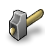

In the Headlines
|
The GNOME 2.4 Desktop & Developer Platform has been released! Read the official release notes and Ars Technica's detailed review to find out more! |
|
|  |
Say NO to software patents in Europe! The GNOME website is participating in an online demonstration against the acceptance of software patents in Europe. This change in law threatens many GNOME contributors living and working in Europe, and is a detriment to the progress of our industry as a whole. |
|
Now's a good time to say thanks for the best desktop environment on the planet by becoming a Friend of GNOME or by upping your current Friends level. All contributions are tax-deductible in the U.S. Thanks to our generous Friends. |